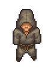

Monks
| This article is a stub. You can help Graveyard Keeper Wiki by expanding it. |

| Monk | |
|---|---|
 | |
Basic Information
| |
Location :
|
Church |
Role :
|
Church goer |

The Monks are NPCs who attend your Sermon on at the Church. They are the main source of
Faith.
After the Sermon they also donate money into the Donation Box. The number attending Monks depends on the number of Church benches/ .
.
| |||||||||||||||||||||||||||||